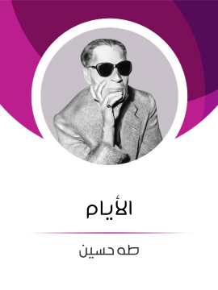
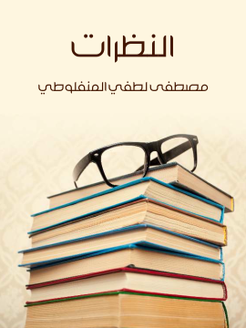
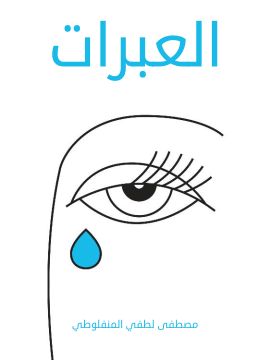
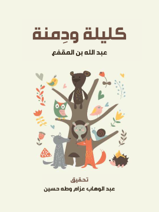
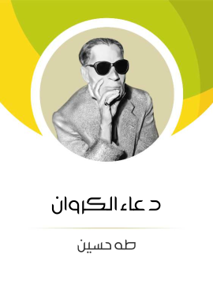
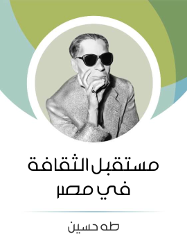

📚 مكتبتي الذكية |
| الرئيسية |
المعرفة بين يديك
كل قراءة تفتح لك باب جديد
تصفحي الكتب وتعرفي على مؤلفيها واختاري اللي يناسب اهتمامك
السير والأدب القصص والروايات الفكر والثقافة
السير والأدبتجارب وأفكار تفتح لك زاوية جديدة |
 |
الأيامسيرة ذاتية تحكي مراحل من حياة طه حسين ورحلته مع التعليم |
 |
النظراتمقالات أدبية تناقش أحوال المجتمع والأخلاق والعلاقات بين الناس |
القصص والرواياتحكايات متنوعة وشخصيات تبقى في الذاكرة |
 |
العبراتمجموعة قصص تتناول مشاعر الناس وما يمرون فيه من فقد وظلم ومعاناة |
 |
كليلة ودمنةحكايات على ألسنة الحيوانات تحمل معاني الحكمة والتعامل مع الآخرين |
 |
دعاء الكروانرواية عن آمنة وما تواجهه من ظروف اجتماعية ومشاعر متداخلة |
الفكر والثقافةقراءات عن التعليم ودور الثقافة في حياتنا |
 |
مستقبل الثقافة في مصركتاب يناقش التعليم والثقافة ودورهما في بناء المجتمع |
| اسم الكتاب | المؤلف | التصنيف |
|---|---|---|
| الأيام | طه حسين | السير والأدب |
| النظرات | مصطفى لطفي المنفلوطي | السير والأدب |
| العبرات | مصطفى لطفي المنفلوطي | القصص والروايات |
| كليلة ودمنة | عبد الله بن المقفع | القصص والروايات |
| دعاء الكروان | طه حسين | القصص والروايات |
| مستقبل الثقافة في مصر | طه حسين | الفكر والثقافة |
كيف تختارين قراءتك
|